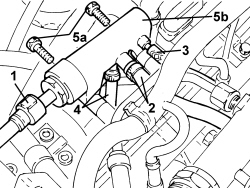

1060F50 FUEL RETURN MANIFOLD - R.R.
- Path
- Procedures > 10 ENGINE > 1060 DIESEL INJECTION SYSTEM > 1060F INJECTORS AND PIPES > 1060F50 FUEL RETURN MANIFOLD - R.R.
- Kind
- repair procedure (removal / refitting; the operation number is the code)
- Applies to
- engines: 2.4 JTD 20v; all production periods
- Interactive page
- https://sloeber94.github.io/elrnDB-aBrrSpdr/en/#/946002990
Applies to: engines: 2.4 JTD 20v; all production periods
 Removing
Removing
 Refitting
RefittingOp. 1016A10 SOUND-PROOFING COVER - R.R
1. Disconnect the rapid connector for the fuel return pipe to the tank, fuel return manifold side.
2. Loosen the bands and remove the fuel return pipe from the fuel manifold, fuel return manifold side.
3. Disconnect the fuel return pipe from the injectors, fuel return manifold side.
4. Loosen the band and disconnect the fuel return pipe from the pressure pump, fuel return manifold pipe side.
5. Undo the bolts (5a) and remove the fuel return manifold (5b).

Applies to: engines: 2.4 JTD 20v; all production periods
Refitting
Removing- Place the fuel return manifold pipe in its housing and secure it using the bolts.
- Connect the fuel return pipe to the pressure pump, fuel return manifold pipe side and tighten the band.
- Connect the fuel return pipe from the injectors, fuel return manifold side.
- Connect the fuel return pipe from the fuel manifold, fuel return manifold side and tighten the band.
- Connect the rapid connector for the fuel return pipe to the tank, fuel return manifold side.